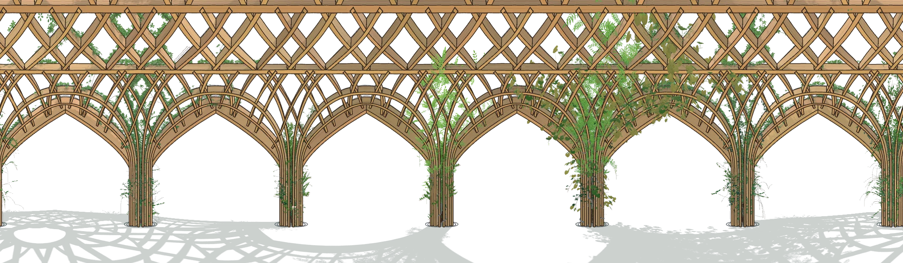
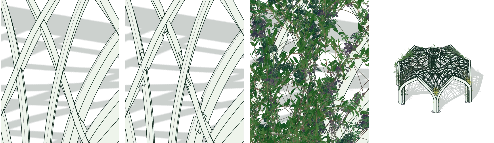
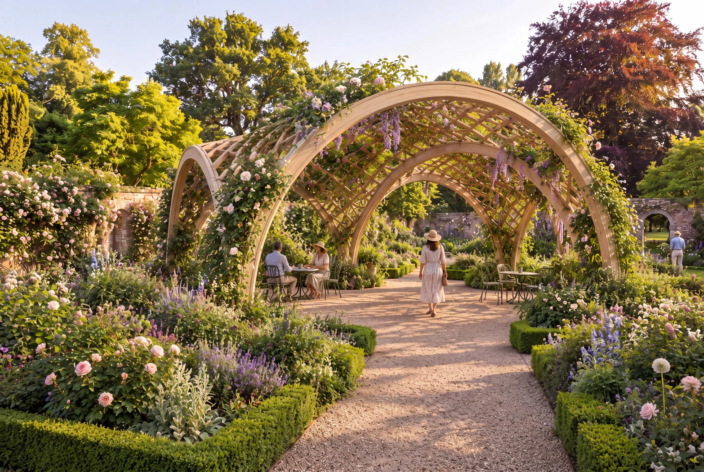
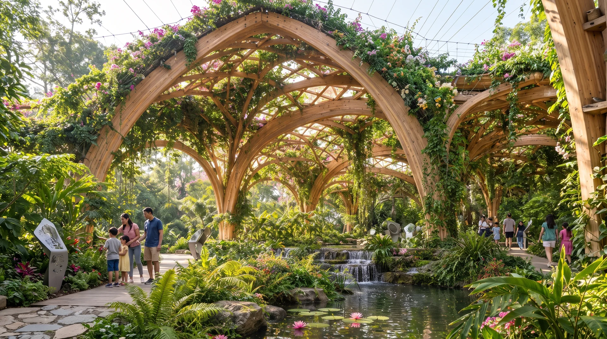
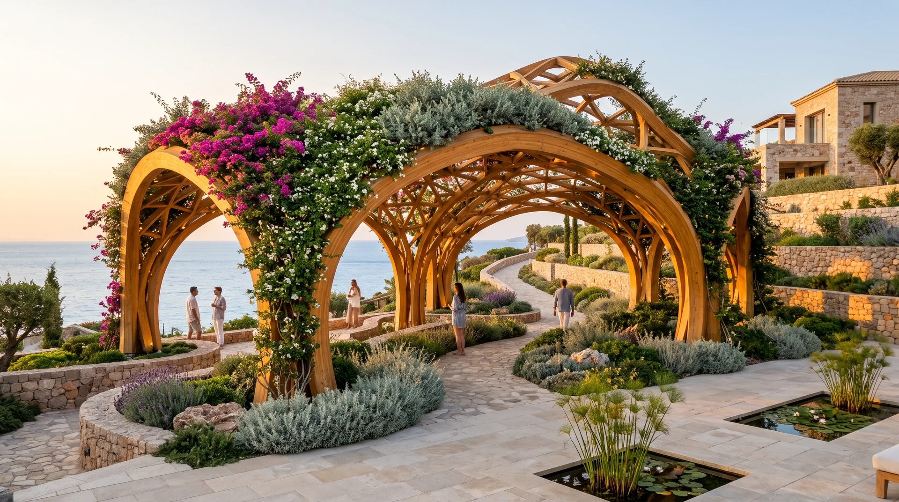

MIT DesignX × LUMA · 2026
Buildings that grow.
And the means to make many.
Scroll. It is the only control here, and it is time.
We mine, pour, and cut; we assemble inert objects that begin decaying the moment they’re complete; and we’ve quietly accepted that the largest thing our species makes — the built world — is also the most severed from the living one.
One Bower, followed all the way
A room, through time.
- From above
- On the approach
- Inside
The design. A plan of rooms, bays and crowns. The roof, the timber and every joint are made from it.
Assembly. Each member is milled to its own shape and carries its own name. They go up one by one.
Planting. Grown specimens go in where the timber meets the ground.
Establishing. A gardener ties in and prunes. The timber is what the plants climb.
Established, and still changing: leaf, flower, leaf fall, bare stem, leaf again.
A building like this is not finished when it is built. Nobody can yet draw, promise or price one whose finished state is years away, and partly not theirs to decide.
Variability is the essence of nature and the enemy of industry; Bower’s bet is to make variability manufacturable.
The same room, one midsummer day
Growth changes the light.
- At installation
- Establishing
- Established
Shade on the floor, from six in the morning to six at night. The frame is dashed overhead; the red mark is the sun. What the timber alone shades, and what the planting adds, are different rooms.
Turning on the spot, in the middle of it
Planting becomes part of the room.

What growing it told us
The plants found the joints.
- We grew this room three times, with the same planting and the same care.
- It has 631 milled joints. Clinging plants reached 13 of them every time, and 9 more some of the time.
- At each, the notch left a slot 3 mm wide and 110 mm deep, straight ahead of the stem.
- So those laps are cut differently. The wall bears on a 30 mm land and opens 40 mm either side: a pocket a stem can lie in.
- Eighteen laps are cut this way. The room was rebuilt with them, and grown again.

- As every lap is cut
- As this one is cut now
- The same lap, grown
- The room, on the building as now cut
Simulated, not built. That a stem wedges a gap is taken from what clinging plants do to fences and cladding; the simulator does not show it. The splayed lap’s sizes are provisional and its strength is not checked. Four housings the planting named still want a detail of their own.
The means to make many
Different parts. A repeatable process.
Fourteen connected operations, from timber preparation to a finished rib.
Three of the fourteen
Form. Measure. Machine.
Form. Robot-set pins shape the glued layers; yokes hold them in place.
Measure. A scan compares the rib with its target.
Machine. Joint geometry becomes a cutting sequence. A splayed lap is one more.
What is not designed yet
Every study here changed the building and held the planting still. Which plant goes where, and why, is the next thing to design.
Where the first ones could stand
The first customers.



In discussion with
Active conversations, not signed commissions. The three pictures are generated concept images, not work for these organisations and not drawings of the room above.
One Bower. Three steps. Agree your budget first.
- 01 Commission£65,000Deducted from total build cost.
- 02 BuildFixed build price
- 03 GrowAnnual care
Architecture. Ecology. Software. Manufacturing.
MIT DesignX × LUMA
A room is the beginning.
Make the first Bower possible.
Develop the means to make many.
Architectural concept · November 2026 · bowerbuild.org